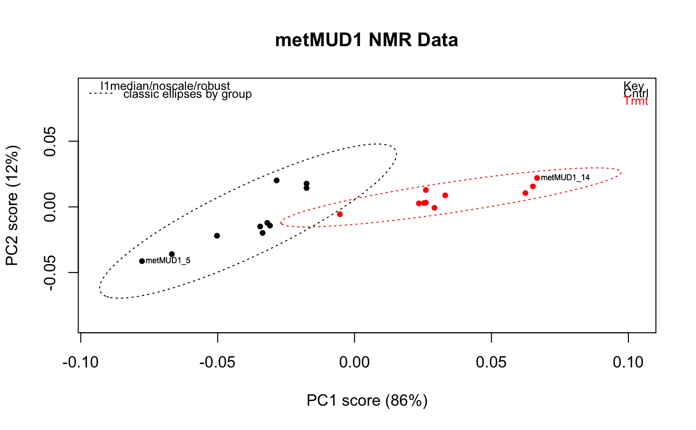
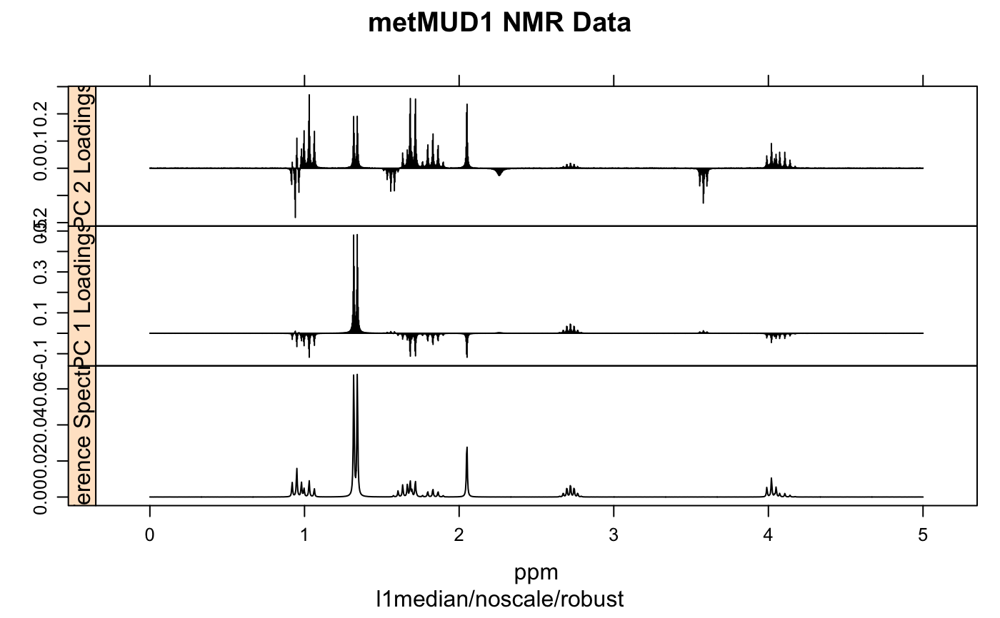

r_pcaSpectra.RdA wrapper which carries out robust PCA analysis on a Spectra
object. The data are row- and column-centered, and the user can select
various options for scaling.
r_pcaSpectra(spectra, choice = "noscale")
| spectra | An object of S3 class |
|---|---|
| choice | A character vector describing the type of scaling to be
carried out. One of |
An object of classes converted_from_princomp and prcomp.
It includes a list element called $method, a
character string describing the pre-processing carried out and the type of
PCA performed (used to annotate plots).
K. Varmuza and P. Filzmoser Introduction to Multivariate Statistical Analysis in Chemometrics, CRC Press, 2009.
PCAgrid for the underlying function,
c_pcaSpectra for classical PCA calculations,
s_pcaSpectra for sparse PCA calculations,
irlba_pcaSpectra for PCA via the IRLBA algorithm.
Additional documentation at https://bryanhanson.github.io/ChemoSpec/
For displaying the results, plotScree,
plotScores, plotLoadings,
plot2Loadings, sPlotSpectra,
plotScores3D, plotScoresRGL.
#> Error in (function (spectra, so, pcs = c(1, 2), ellipse = "none", tol = "none", use.sym = FALSE, leg.loc = "topright", ...) { args <- as.list(match.call())[-1] if (length(pcs) != 2) stop("You must choose exactly two PC's to plot") case <- NULL if (inherits(spectra, "Spectra")) case <- "PCA" if (inherits(spectra, "Spectra2D")) case <- "MIA" if (inherits(so, "pop")) case <- "PCA" if (is.null(case)) stop("Could not reconcile data object and scores object.") if ((case == "MIA") && (use.sym)) stop("ChemoSpec2D does not support use.sym") chkSpectra(spectra) if (case == "PCA") DF <- data.frame(so$x[, pcs], group = spectra$groups) if (case == "MIA") DF <- data.frame(so$C[, pcs], group = spectra$groups) GRPS <- dlply(DF, "group", subset, select = c(1, 2)) if ((ellipse == "cls") || (ellipse == "rob") || (ellipse == "both")) { gr <- sumGroups(spectra) for (n in 1:length(gr$group)) { if (gr$no.[n] == 1) message("Group ", gr$group[n], "\n\thas only 1 member (no ellipse possible)") if (gr$no.[n] == 2) message("Group ", gr$group[n], "\n\thas only 2 members (no ellipse possible)") if (gr$no.[n] == 3) message("Group ", gr$group[n], "\n\thas only 3 members (ellipse not drawn)") } idx <- which(gr$no. > 3) gr <- gr[idx, ] ELL <- llply(GRPS[idx], .computeEllipses) x.scores <- range(llply(GRPS, subset, select = 1)) y.scores <- range(llply(GRPS, subset, select = 2)) x.ell <- range(llply(ELL, function(x) { range(x[1]) })) y.ell <- range(llply(ELL, function(x) { range(x[2]) })) x.ell.r <- range(llply(ELL, function(x) { range(x[4]) })) y.ell.r <- range(llply(ELL, function(x) { range(x[5]) })) x.all <- range(x.scores, x.ell, x.ell.r) x.all <- x.all + diff(x.all) * 0.05 * c(-1, 1.15) y.all <- range(y.scores, y.ell, y.ell.r) y.all <- y.all + diff(x.all) * 0.05 * c(-1, 1.15) } if (ellipse == "none") { x.scores <- range(llply(GRPS, subset, select = 1)) y.scores <- range(llply(GRPS, subset, select = 2)) x.all <- range(x.scores) + diff(range(x.scores)) * 0.05 * c(-1, 1.15) y.all <- range(y.scores) + diff(range(y.scores)) * 0.05 * c(-1, 1.15) } dPargs <- list(PCs = DF[, 1:2], spectra = spectra, case = case, use.sym = use.sym, ... = ...) if (!"xlim" %in% names(args)) dPargs <- c(dPargs, list(xlim = x.all)) if (!"ylim" %in% names(args)) dPargs <- c(dPargs, list(ylim = y.all)) do.call(.drawPoints, dPargs) if ((ellipse == "cls") | (ellipse == "rob") | (ellipse == "both")) .drawEllipses(ELL, gr, ellipse, use.sym, ...) if (case == "PCA") { .addMethod(so) if (leg.loc != "none") .addLegend(spectra, leg.loc, use.sym, bty = "n") .addEllipseInfo(ellipse) } if (case == "MIA") { if (leg.loc != "none") .addLegend(spectra, leg.loc, use.sym = FALSE, bty = "n") .addEllipseInfo(ellipse) } if (tol != "none") .labelExtremes(DF[, 1:2], spectra$names, tol)})(spectra = metMUD1, so = pca, pcs = c(1, 2), ellipse = "cls", tol = 0.05, main = "metMUD1 NMR Data", xlab = "PC1 score (86%)", ylab = "PC2 score (12%)"): object 'pca' not found